pipeline.js
pipeline.js is modular pipeline like developer tool for node.js
Main concept
Suppose we have pipeline with different types of stages.
Stage is the single working unit that can process some specific component's part. In the pipeline the component's part is passing by specific stages. Every stage can process specific component's part. One specific part can be splited into different parts and? according to its specific requirments, they can be processed as well. After that these different parts is combined back into one component's part with (maybe) different rules.
Using the different pipeline's stages one can combine new type of pipeline by assembling they together differently to get another result, or just replace old stages with new, and so on.
The same idea is under the development of pipeline.js.
There is basic stages that can be used to define more complex async-processing of specific data with pipline-like processing.

Note:
The pipeline concept means to use the same context on the same level of staging.
i.e. while we split context in some stages we do not need to cmbine it if we not changing the context. by default it will return the same context but(!) with all childs that appears in current stage. this is for traceability.
Stages: quick overview
Context
Context - is the thing that is need to be processed by the system.
We can fork context, take the parent context using getParent, and all errors during the processing of child context will be stored store in the parent's context error list. it can be traced to determine which stage it is already passed. and so on... see the code and tests.
One way Context processing
Stage
Stage is the eventEmitter sublcass. We can either subscribe to events or use callback to catch-up end of processing.
Stage is by default asyncronous.
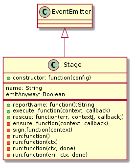
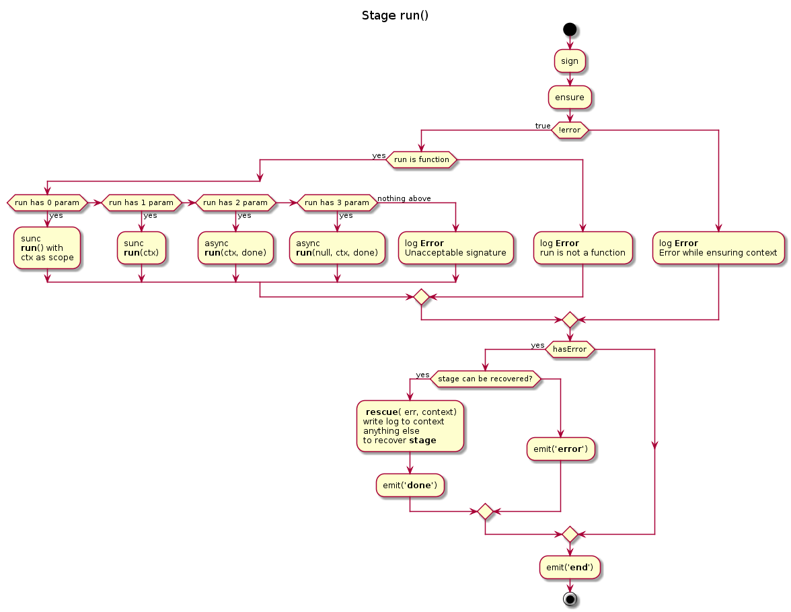
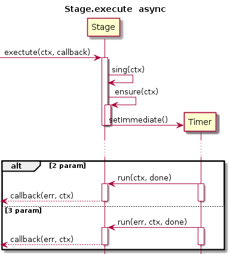
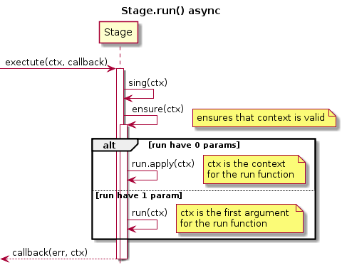
Pipeline
Pipeline is by subclass of Stage. the main purpose of it is to run sequence of different stages one after another.
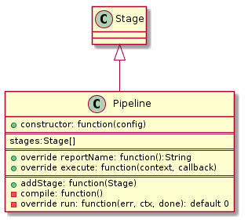
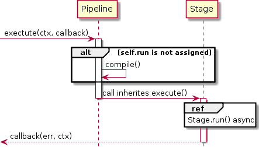
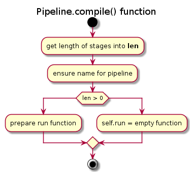
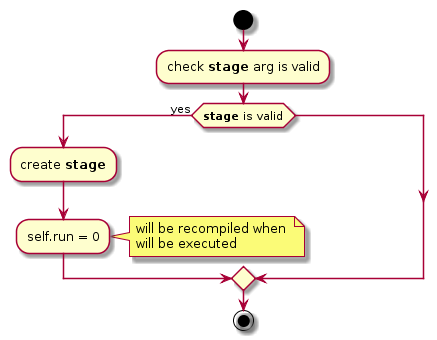
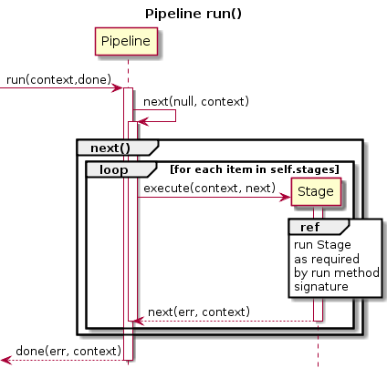
Processing with alternatives
IfElse
IfElse is the type of stage that use condition to choose which one of two Stage we need to run according to specific condition.
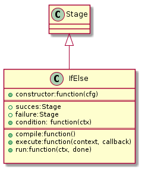
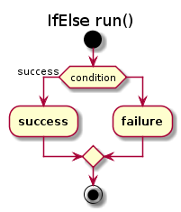
MultiWaySwitch
MultiWaySwitch is more complex Stage than IfElse is.
we can provide each stage in the list with condition, by examining which MultiWaySwitch make decision wheather the specific stage can be run or not.
notable feature is that on context can be processed from 0 to n times with the MultiWaySwitch.
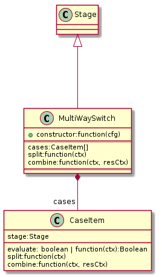
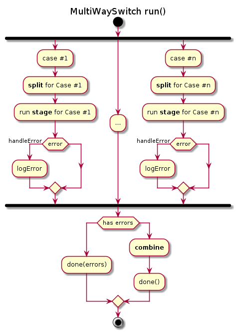
Parallel
Parallel is the Stage that make possible process of stage that contain enumeration in it with parallel options. It runs one stage as parallel processing on series of data of the processing context.
it reachs end only after all data will be processed. It returns list of error.
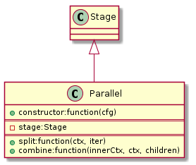
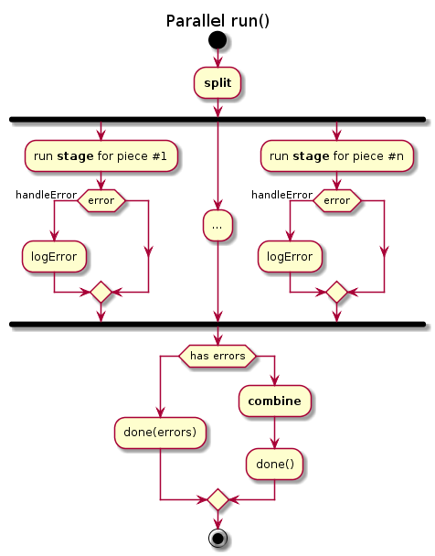
Sequential
Sequential is the Stage that work almost like Parallel, but it run stage in sequential manner. So it first error occures we can manage it to stop processing or continue if we decide that the error not significant.
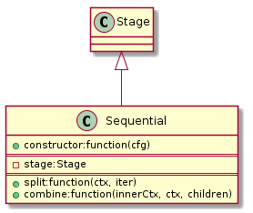
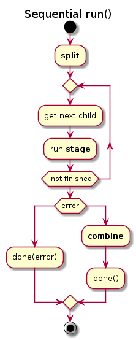
Wrap
Wrapper is a kind of stage that make possible to change context structure for specific type of stage. Using this we one can reuse existing stages more than once for different parts of common context
Timeout
Timeout can be configured to run stage and wait for specified timeout time and throw error or run different stage.
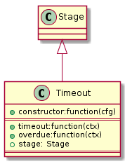
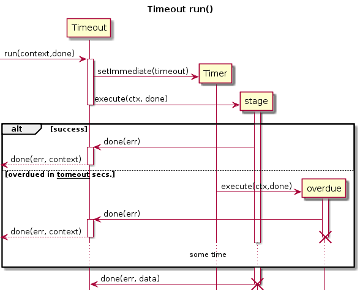
RetryOnError
RetryOnError can be configured to run specified stage for certain lap until it will success. retry can either function or number.
DoWhile
DoWhile loop while Sequential and Parallel works with the series of the data that has predefined length, this type of stage is not limited to the length. So it can be configured to run unlimited loop...
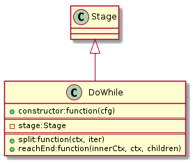
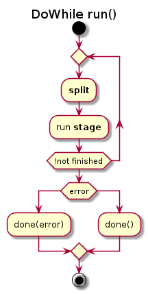
Empty
Just the Empty Stage. On execute return context to callback.
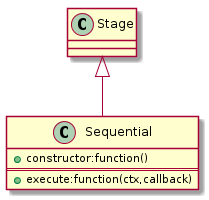
More info see documentation